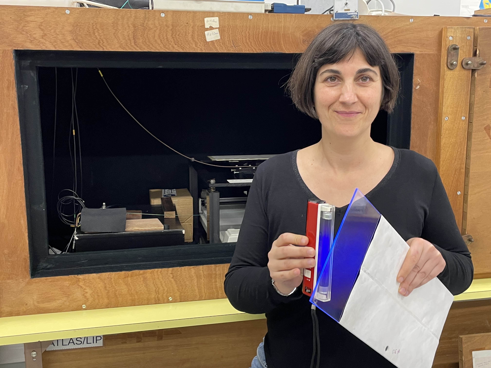

### About me

I am a Particle Physics experimentalist at [LIP](https://www.lip.pt/) in Lisbon and a member of the [ATLAS](https://atlas.cern/) Collaboration, [CERN](https://cern.ch/). I obtained my PhD in 2017, from the University of Lisbon, searching for Higgs boson decays into b-quarks with the ATLAS/LHC experiment, enhancing signal sensitivity with Machine Learning. Currently, I am working on Deep Learning models for generic searches for new physics at colliders, which I apply to Anomaly Detection searches with ATLAS data. In parallel, I contribute to the ATLAS Tile hadronic calorimeter Calibration and Performance studies. This work led me to investigate new scintillating materials and calorimeter designs for future collider experiments, namely the FCC.

### Scintillator R&D at ['90s de Ciência/Antena 1 - RTP'](https://www.rtp.pt/play/p2936/e665190/90-segundos-ciencia)


### Selected Publications
1. B. Pereira, R. Pedro et al, Study of the Radiation Hardness of the ATLAS Tile Calorimeter Optical Instrumentation with Run 2 data, [arxiv:2412.15944 (sub. to JINST)](https://arxiv.org/pdf/2412.15944) 
1. R. Machado, R. Pedro et al, Production and characterisation of blended PET/PEN scintillator samples, [NIM-A 1066 (2024) 169627](https://www.sciencedirect.com/science/article/pii/S0168900224005539?via%3Dihub)
1. ATLAS Collaboration, Operation and performance of the ATLAS tile calorimeter in LHC Run 2, [Eur. Phys. J. C 84 (2024) 1313](https://link.springer.com/article/10.1140/epjc/s10052-024-13151-4)
1. ATLAS Collaboration, Search for new particles in final states with a boosted t-quark [JHEP 05 (2024) 263](https://link.springer.com/article/10.1007/JHEP05(2024)263)
1. R. Pedro et al, Laser calibration of the ATLAS Tile Calorimeter during LHC Run 2, [JINST 18 (2023) 06, P06023](https://iopscience.iop.org/article/10.1088/1748-0221/18/06/P06023/pdf)
1. L. Apolinário, N. F. Castro, M. Crispim Romão, J. G. Milhano, R. Pedro et al, Deep Learning for the Classification of Quenched Jets, [JHEP11(2021)219](https://link.springer.com/article/10.1007/JHEP11(2021)219)
1. M. C. Romão, N. F. Castro, R. Pedro et al, Anomaly Detection as a tool for Searches at Colliders, [Eur Phys J C 81(1):27(2021)](https://link.springer.com/article/10.1140/epjc/s10052-020-08807-w)
1. M. C. Romão, N. F. Castro, R. Pedro et al, Energy Mover’s distance in the search for rare phenomena at colliders, [Eur Phys J C 81(2):192(2021)](https://link.springer.com/article/10.1140/epjc/s10052-021-08891-6)
1. M. C. Romão, N. F. Castro, R. Pedro et al, Transferability of Deep Learning in New Physics Searches, [Phys Rev D 101(3):035042(2020)](https://journals.aps.org/prd/pdf/10.1103/PhysRevD.101.035042)
1. ATLAS Collaboration, ATLAS operation and performance for 2015-18 data-taking, [JINST (2020) 15 P04003](https://iopscience.iop.org/article/10.1088/1748-0221/15/04/P04003)
1. ATLAS Collaboration, Operation and performance of the ATLAS Tile Calorimeter in Run 1, [Eur Phys J C78 (2018) 987](https://link.springer.com/article/10.1140/epjc/s10052-018-6374-z)
1. ATLAS Collaboration, Observation of H → bb decays and VH production with ATLAS, [Phys Lett B786 (2018)](https://www.sciencedirect.com/science/article/pii/S0370269318307056)
1. ATLAS Collaboration, Evidence for the H → bb decay with the ATLAS detector, [JHEP 12 (2017) 024](https://link.springer.com/article/10.1007/JHEP12(2017)024)
1. ATLAS Collaboration, Search for bb decays of the SM Higgs in (W/Z)H production with ATLAS, [JHEP 01 (2015) 069](https://link.springer.com/article/10.1007/JHEP01(2015)069)
1. R. Pedro, A. Maio et al, The MiniPET: a didactic Positron Emission Tomography system, [JINST (2013) 8 C03005](https://iopscience.iop.org/article/10.1088/1748-0221/8/03/C03005/pdf)